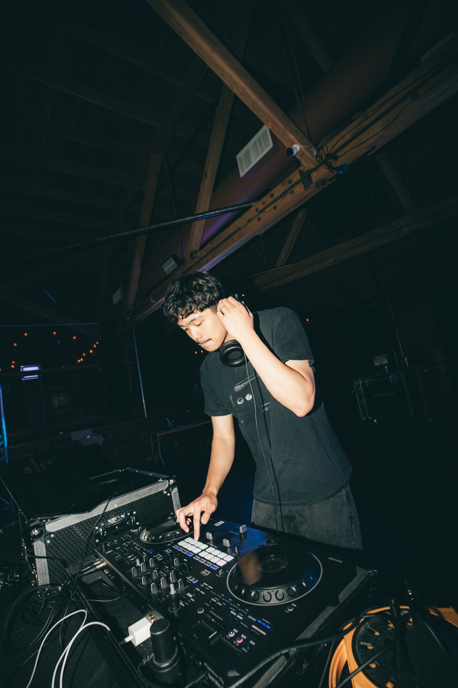
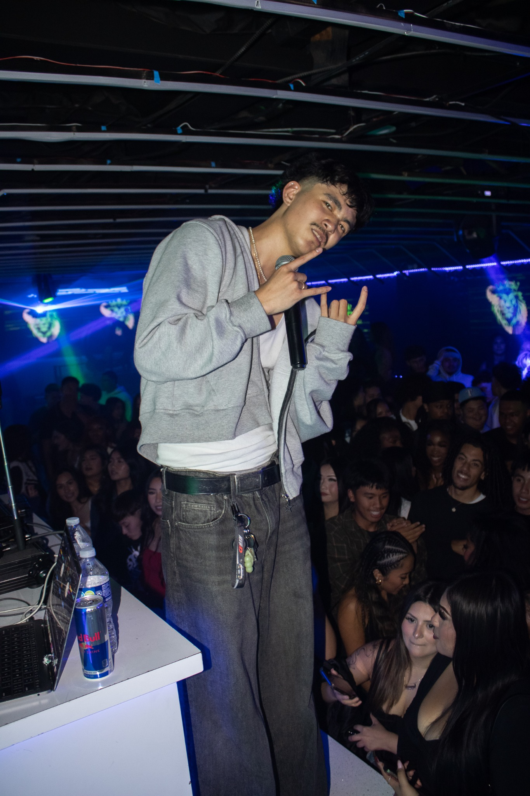
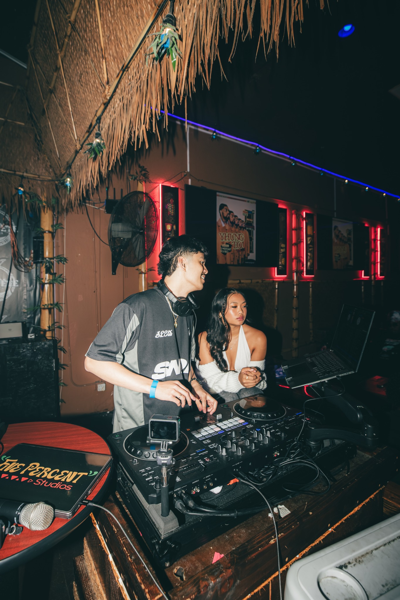

It started before I knew it would matter.
Raised around the decks, shaped by the Bay, and still an R&B head at heart.

DJing was part of the house before it was part of the plan.
My dad was a DJ, so I grew up going with him to private events and watching how he worked a room. He taught me the basics when I was still a kid — beat matching, mixing, timing, and how records fit together. Sometimes he would let me get on the decks during his gigs.
Back then, it was a hobby. I liked it, but I never thought I would take DJing seriously.
Music was different. I was always a music head, listening across genres and decades and constantly looking for new sounds. Oldies and old-school R&B were some of the records that stuck with me early, and that curiosity never really left.
Before I had a DJ name, I had the fundamentals.
Then I accidentally booked myself.
Junior year at South San Francisco High School, I was in ASB helping plan events and school dances. We needed a DJ, and the first person I thought of was my dad. I volunteered him before I even asked.
Then I realized I did not want my dad DJing my high school dance.
So I gave myself about a month to get ready. I downloaded the latest music, went back to everything he had taught me, and practiced knowing I had basically volunteered myself to DJ for more than 300 students — including a lot of my closest friends.
I pulled it off. The response was positive, and that one dance turned into more dances and school events throughout the rest of high school.
“I DID NOT WANT MY DAD DJING MY HIGH SCHOOL DANCE.”

College is where it stopped feeling like just a hobby.
When I got to San José State University, I kept doing school dances, but I still never really thought of DJing as something bigger.
At the beginning of my third year, something changed. I was 20 and started asking myself why I wasn't trying to DJ at my own college. I started taking fraternity gigs, and one of those parties became one of my most viral DJ videos.
That clip brought exposure, momentum, and more bookings. The rooms got bigger. I was DJing 21+ clubs before I was even 21.
Since then, I've had the opportunity to open for artists including Kalan.FrFr and Yhung T.O, and more recently opened for Kalan.FrFr again.

The set is never just about me. It's about the room.
I consider myself the definition of open format because I've had to play for rooms that couldn't be more different from each other.
Filipino debuts. 50th+ birthday parties. Fraternity events. Clubs. Private parties. Corporate events. Different cultures, different generations, different expectations.
Some nights call for Bay Area records and club energy. Some need throwbacks. Some need old-school R&B. Other rooms need something completely different.
To me, open format isn't about playing everything just to say I can. It's being able to walk into different rooms, understand the people in front of me, and play the record that makes sense next.
More purpose. More music. More rooms.
Now I'm approaching DJ GELO with more purpose than ever. It's not only about getting behind the decks anymore. I'm creating content, sharing mixes, discovering music, and building something that can exist beyond one night or one room.
The Bay Area will always come through in the way I mix — the energy, the records, the culture and the switches.
But underneath all of it, I'm still an R&B head.
That part never changed.